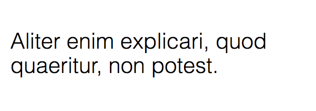
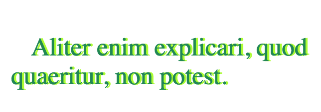

Aliter enim explicari, quod quaeritur, non potest.
1. styling af tekst

Teksten er stylet med hvid farve, fonten er Arial i størrelsen 1.6em og så har den fået en baggrund med text-shadow i magenta.
Tip: color, font-family (Arial, sans-serif), font-size, text-shadow
2. styling af tekst

Aliter enim explicari, quod quaeritur, non potest.
Her skal du style i Helvetica og sørge for at stregen er tilpas tynd.
Tip: font-family (Helvetica, sans-serif), font-size, font-weight
3. styling af tekst

Aliter enim explicari, quod quaeritur, non potest.
Her er der igen en tekst med en farvet skygge. Derudover er der en indrykning af den første linie.
Tip: color, font-size, text-shadow, text-indent
4. styling af tekst

Aliter enim explicari, quod quaeritur, non potest.
Her skal du sørge for at teksten står med majuskler (uden at ændre i html'en.
Tip: color, font-size, text-transform